Chapter 15 Computing Infrastructure
15.1 Computing Resources
In this chapter we will describe the basics about data size and computing capacity. We will discuss the computing and storage requirements for many types of cancer related data, as well as options to perform informatics work that might require more intensive computing capacity than your personal computer.
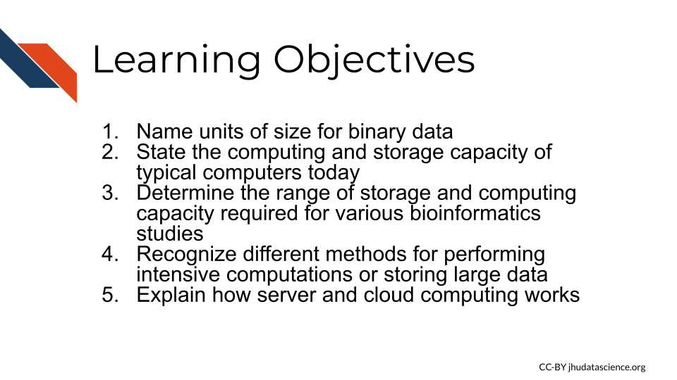
15.1.1 Data Sizes
Recall that the smallest unit of data is a bit which is either a zero or a one. A group of 8 bits is called a byte, and most computers and phones, and software programs are constructed or designed in a way to accommodate groups of bytes at a time. For example a 32-bit machine can work with 4 bytes at a time and a 64-bit can work with 8 bytes at a time. But how big is a file that is 2 GB? When we sequence a genome, how large is that in terms of binary data? Can our local computer work with the size of data that we would like to work with?
First let’s take a look at how the size of binary data is typically described and what this actually means in terms of bits and bytes:
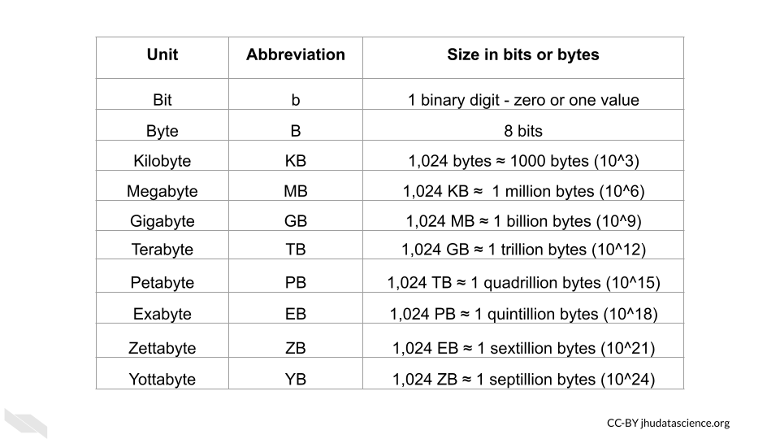
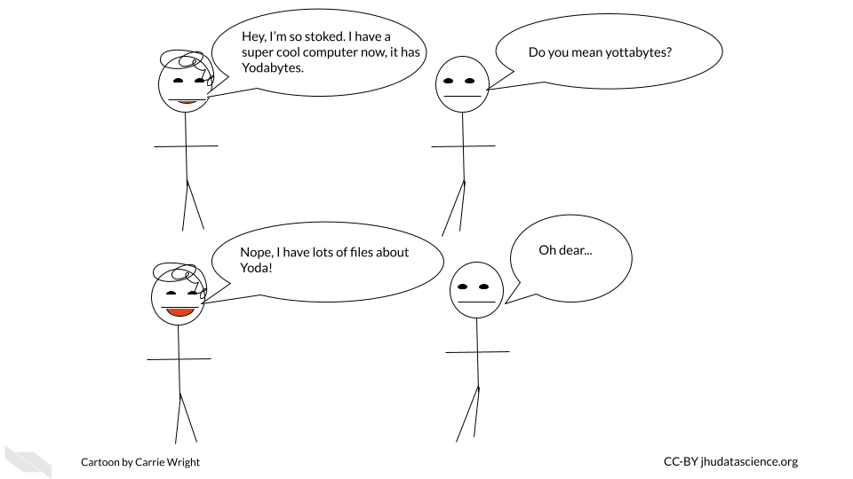
Now that we know how to describe binary data sizes, let’s next think about how much computing capacity typical computers have today.
15.1.2 File Sizes
Now let’s think about the files that we might need for our research, how big are files typically for genomic, imaging, and clinical research?
15.1.2.1 Genomic data file sizes
Genomic data files can be quite large and can require quite a bit of storage and processing power.
Here is an image of sizes of some common file types:
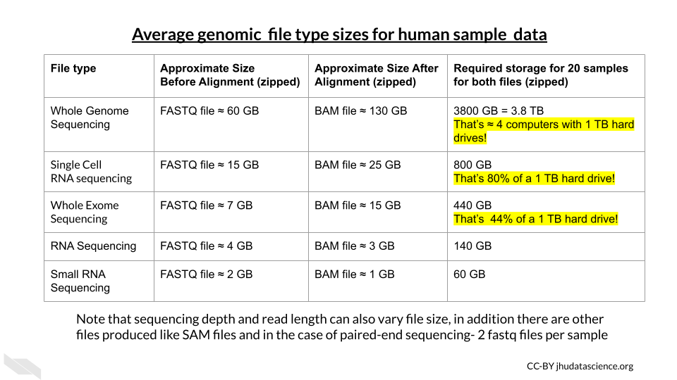
15.1.2.2 Imaging Data File Sizes
Imaging data, although often smaller than genomic data, can start to add up quickly with more images and samples.
Here is an table of average file sizes for various medical imaging modalities from Liu et al. (2017):
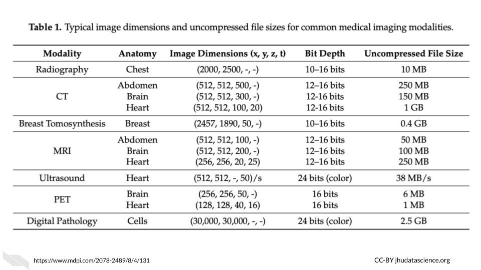 [source]
Note that depending on the study requirements, several images may be needed for each sample. Thus data storage needs can add up quickly.
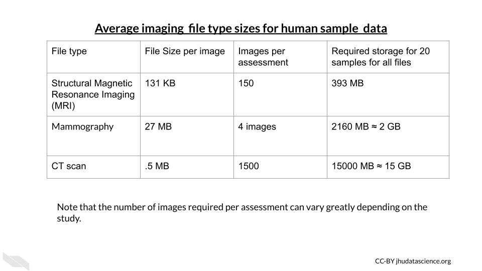
15.1.2.3 Clinical Data File Sizes
Really large clinical datasets can also produce sizable file sizes. For example the Healthcare Cost and Utilization Project (HCUP) National (Nationwide) Inpatient Sample (NIS) contains data on more than seven million hospital stays in the United States with regional information.
According to the NIS website it “enables analyses of rare conditions, uncommon treatments, and special populations” (“NIS Database Documentation” n.d.).
Looking at the file sizes for the NIS data for different states across years, you can see that there are files for some states, such as California as large as 24,000 MB or 2.4 GB (“NIS Database Documentation” n.d.). You can see how this could add up across years and states quite quickly.
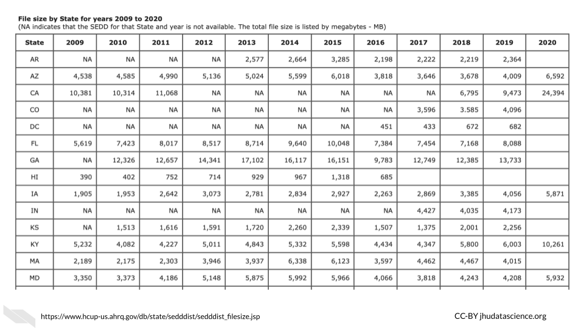
15.1.3 Computing Options
15.1.3.1 Personal computers
These are computers that your lab might own, such as a laptop, a desktop, used by one individual or maybe just a few individuals in your lab.
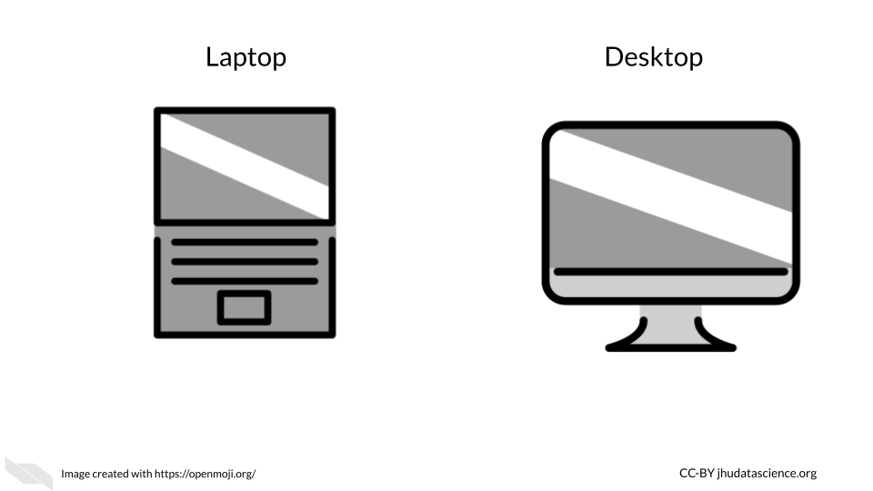
If you are not performing intensive computational tasks, it is possible that you will only need personal computers for your lab. However, you may find that this changes, and you might require connecting your personal computers to shared computers for more computational power and or storage.
15.1.3.3 Computer Cluster
In a computing cluster several of the same type of computer (often in close proximity and connected by a local area network with actual cables or an intranet rather than the internet) work together to perform pieces of the same single task simultaneously (computer_cluster_2022?). The idea of performing multiple computations simultaneously is called parallel computing (parallel_2021?).
There are different designs or architectures for clusters. One common one is the Beowulf cluster in which a master computer (called front node or server node) breaks a task up into small pieces that the other computers (called client nodes or simply nodes) perform (beowulf_2022?).
For example, if a large file needs to be converted to a different format, pieces of the file will be converted simultaneously by the different nodes. Thus each node is performing the same task just with different pieces of the file. The user has to write code in a special way to specify that they want parallel processing to be used and how. See here for an introduction about how this is done (Zach_Caceres_GNU_Parallel_2019?).
It is important to realize that the CPUs in each of the node computers connected within a cluster are all performing a similar task simultaneously.
See here for more information (de_doncker?).
15.1.3.4 Computer Grid
In a computing grid are often different types of computers in different locations work towards an overall common goal by performing different tasks (grid?).
Again, just like computer clusters, there are many types of architectures that can be rather simple to very complex. For example you can think of different universities collaborating to perform different computations for the same project. One university might perform computations using gene expression data about a particular population, while another performs computations using data from another population. Importantly each of these universities might use clusters to perform their specific task.
Both grids and clusters use a special type of software called middleware to coordinate the various computers involved. Users need to write their scripts in a way that can be performed by multiple computers simultaneously. Users also need to be conscious of how to schedule their tasks and to follow the rules and etiquette of the specific cluster or grid that they are sharing (more on that soon!).
See here and herefor more information about the difference between clusters and grids (lithmee_difference_2018?; grid_cluster_difference_2019?).
15.1.3.5 “Cloud” computing
More recently, the “Cloud” has become a common computing option. The term “cloud” has become a widely used buzzword (cha_cloud_2015?) that actually has a few slightly different definitions that have changed overtime, making it a bit tricky to keep track of. However, the “cloud” is typically meant to describe large computing resources that involve the connection of multiple servers in multiple locations to one another (cloud_2022?) using the internet. See here for a deeper description of what the term cloud means today and how it compares to other more traditional shared computing options (cloud_deeper?).
Many of us use cloud storage regularly for Google Docs and backing up photos using iPhoto and Google. Cloud computing for research works in a similar way to these systems, in that you can perform computations or store data using an available server that is part of a larger network of servers. This allows for even more computational dependability beyond a more simple cluster or grid. Even if one or multiple servers is down, you can often still use the other servers for the computations that you might need.
Furthermore, this also allows for more opportunity to scale your work to a larger extent, as there is generally more computing capacity possible with most cloud resources (cloudvstrad?).
Companies like Amazon, Google, Microsoft Azure, and others provide cloud computing resources. Somewhere these companies have clusters of computers that paying customers use through the internet. In addition to these commercial options, there are newer national government funded resource options like Jetstream (described in the next section). We will compare computing options in another chapter coming up.
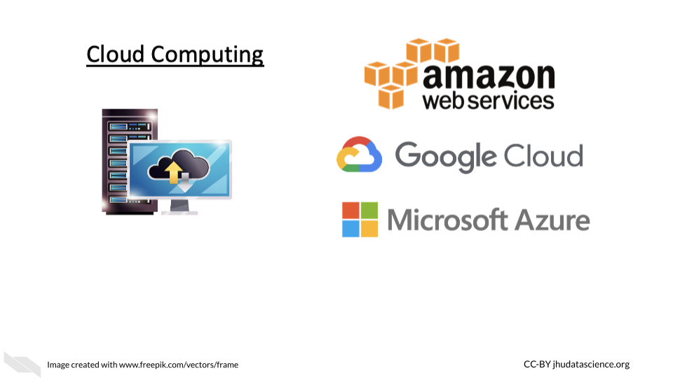
15.2 Shared Computing Etiquette
In this chapter we will discuss the proper etiquette for using more traditional shared computing resources, such as an institutional high performance computing cluster server. This will help you to understand what would be required for you to use such resources. Different resources will have slightly different use rules, however, many resources will share common usage requirements. The following is written based on personal experience, the (doi_rules?) and the (JHPCE?).
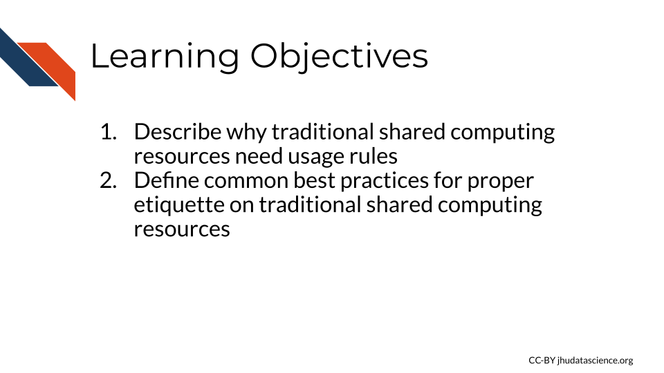
We will use the Johns Hopkins Joint High Performance Computing Exchange (JHPCE) cluster resource as an example to motivate the need for usage rules and proper sharing etiquette for such resources.
First let’s learn a bit about this JHPCE. For this particular resource there are about 400 active users.It is optimized for genomic and biomedical research and has 4,000 cores! That’s right, as you can imagine, this is much more powerful than the individual laptops and desktops that researchers at the university have for personal use, which would typically currently only have around 8 cores. There is also 28TB of RAM and 14 PB of storage!
Now that you know more about digital sizes, you can appreciate that this server can allow for much faster processing and really large amounts of storage, as again a researchers’ computer might have something like 16 GB of RAM and 1TB of storage.
There are 68 nodes that make up the JHPCE currently. As, with most clusters some of the nodes are dedicated to managing users logging in to the cluster and some of the nodes are dedicated to data transferring. Each node has 2-4 CPUs that provide 24-128 cores! As you can see these processors or chips have a lot more cores per each CPU than a typical personal computer.
Individual users connect and perform jobs (aka computational tasks) on the cluster using a formal common pool resource (CPR) hierarchy system. What does this mean? This means that it is a shared resource, where if one user overused the resource it would be to the detriment of others and to overcome this there are usage rules and regulations that are enforced by managers of the resource (common-pool_2022?). This is important because if a single or a few users used up all the computing resources one day, then the other nearly 400 users would have to delay their work that day, which would not be fair.
15.2.1 General Guidelines for shared computing resources
Each cluster or other shared computing resource will have different rules and requirements, but here are a few general rules to keep in make sure that you don’t accidentally abuse the privilege of sharing an amazing resource like this. Don’t be too worried, most shared resources will give you guidance about their specific rules and will often also have settings that don’t allow users to make major blunders.
15.2.1.1 Security guidelines
One major aspect to consider is keeping the computers in the cluster safe from harm. You wouldn’t want to lose your precious data stored on the cluster and neither would your colleagues!
- Use a good secure password that is not easy for someone else to guess.
Some people suggest using sentences that are easy for you to remember, you could consider a line of lyrics from song or poem that you like, or maybe a movie. Modify part of it to include symbols and numbers (passwords?).
![Cartoon - One character says:I came up with the best password! It’s from Elton John’s Rocket Man song. And all this science I don’t understand It’s just my job five days a week A rocket man A rocket man. All the Os are zeros. The other character says: That is super good! But remember you aren’t supposed to share your passwords. Plus now all the readers of this chapter know too.The original character says: Oh shoot… you’re right. The other character says: It’s OK, sounds like you can come up with another.](14-computing-infrastructure_files/figure-html/1B4LwuvgA6aUopOHEAbES1Agjy7Ex2IpVAoUIoBFbsq0_g11383d0152c_0_22.png)
- Don’t share your password and keep it safe!
If you have a Mac, you could consider storing it in your Keychain, alternatively if you have a different type of computer or don’t like the Mac Keychain, consider Dashlane or other password manger services. Luckily both of these options do not come at any extra cost and can be helpful for storing all the passwords we use regularly safely. These are especially good options if your password is difficult for you to remember. Make sure that you abide by any rules regarding storing passwords that might be required by the resource you intend to use.

- Don’t access a server on a computer that is not authorized to do so.
Some servers will require that your computer be authorized for access for added security. It’s a good idea to follow these rules. If you can, perhaps authorize a laptop in case you might need to gain access when you need to be out of town. However if you do so, make sure you also only access such servers with a secure WiFi network. One way to ensure this is is to avoid using public WiFi networks. If you must use a public WiFi network, consider using a virtual private network (VPN) for added security. Here is an article about different VPN options (gilbertson_4_2021?).
- Do not alter security settings without authorization.
Loosening security settings could pose a risk to the data stored on the server. On the other hand, making more strict security settings could cause other users to not be able to perform their work. Contact the managers of the resource if you think changes need to be made.
- Immediately report any data security concerns.
To protect the integrity of your data and your colleagues, be sure to report anything strange about the shared computing resource to those who manage it so that they can address it right away. Also report to them if you have any security breaches on the computer(s) that you use to access the shared computing resource.
15.2.1.2 Overall use guidelines
Now that we know how to keep the resource safe, let’s next talk about general usage.
- Don’t install software unless you have permission.
It is possible that the software you want to use might already be installed somewhere on the shared computing resource that you are unaware about. In addition, if you install a different version of a software program, it is possible that this version (especially if it is newer) will get automatically called by other people’s scripts. This could actually break their scripts or modify their results. They may have a reason to use an older version of that software, do not assume that they necessarily want the updated version. Instead, let the managers of the resource know. They can inform other users and make sure that everyone’s work will not be disrupted.
- Don’t use the server for storage or computation that you are not authorized for.
This is often a rule for shared computing resources, simply because such shared resources are intended for a specific reason and likely funded for that reason. Such resources are costly, and therefore the computational power should be used only for what it is intended for, otherwise people may view the use of the resources for other purposes as essentially theft.
- Don’t alter configurations without authorization.
This could result unintended and unexpected consequences for other users.
15.2.1.3 Daily use guidelines
Now let’s discuss how you should use such resources on a daily basis.
When you submit jobs, make sure you follow the following guidelines. Again consider the fact that there may be more or different requirements for the specific resource that you might be using.
- Don’t use the login or transfer nodes for your computations.
This will cause issues for other users in terms of logging in and transferring their data. This could cause them to be unable to do their work.
- Think about memory allocation and efficiency.
Consider how much RAM and storage is available for people on the shared computing resource. Try not to overload the resource with a really intensive job or jobs that will use most of the resources and either slow down the efficiency of the work for others or not allow them to perform their work at all.
This involves:
- Not using too many nodes if you don’t need to
- Not using too much RAM on a given node or overall if you don’t need to
- Not submitting too many jobs at once
- Communicating with others to give them advanced warning if you are going to submit large or intensive jobs
If you have a really large job that you need to perform, talk with the managers of the resource so that you can work out a time when perhaps fewer users would be inconvenienced. Consult the guidelines for your particular resource about how one let’s people know about large jobs before you email the administrators of the resource directly. Often their are communications systems in place for users to let each other know about large jobs.
15.2.1.4 Communication Guidelines
Speaking of communication, let’s dive into that deeper for a bit.
- Use the proper order for communication.
Often shared resources have rules about how they want people to communicate. For example for some resources it is suggested that you first ask your friends and colleagues if you are confused about something, then consult any available forums, if that does not work then directly email the administrators/managers of the resource. Keep in mind that these people are very busy and get lots of communications.
- Use the ticket system
If a resource has a ticket system for users to get support, use it instead of communicating by email. If such a system is in place, then the administrators running it are used to getting requests this way. If you email directly, you may not receive feedback in a timely manner or the email might get lost.
15.2.3 Running Jobs
Typically a program is used to schedule jobs. Remember that jobs are the individual computational tasks that you ask the server to run. For example, this could be something as simple as moving large files from one directory to another or as complex as running a complicated script on a file.
Such job scheduling programs assign jobs to available node resources as they become available and if they have the required resources to meet the job. These programs have their own commands for running jobs, checking resources, and checking jobs. Remember to use the management system to run your jobs using the compute nodes not the login nodes (nodes for users to log in). There are often nodes set up for transferring files as well.
In the case of the JHPCE, a program called Sun Grid Engine (SGE) is used, but there are others job management programs. See here for more information on how people use SGE for the JHPCE shared resource.
15.2.3.1 Specifying memory (RAM) needs
Often there is a default file size limit for jobs. For example the JHPCE has a 10GB file size limit for jobs. You may need to specify when you have a job using a file that exceeds the file size limit and set the file size for that job. As you may recall if you are using whole genome files you are likely to exceed the default file limit size. Often you are also given a default amount of RAM for your job as well. Again, you can typically run a job with more RAM if you specify. Similar to the file size limit, you will likely need to set the RAM that you will need for your job if it is above the default limit. Often this involves setting a lower and upper limit to the RAM that your job can use. If your job exceeds that amount of RAM it will be stopped. Typically people call stopping a job “killing” it. The lower and upper limit can be the same number.
How do you know how much RAM to assign to your job? Well if you are performing a job with files that are two times the size of the file size default limit, then it might make sense to double the RAM you would typically use. It’s also a good idea to test on one file first if you are going to perform the same job on multiple files. You can then assess how much RAM the job used. First try to perform the job with lower limits and progressively increase until you see that the job was successful and not killed for exceeding the limit. Keep in mind however how much RAM there is on each node. Remember, it is important to not ask for all the RAM on a single node or core on that node, as this will result in you hogging that node and other users will not be able to use RAM on that node or core on that node. Remember that you will likely have the option to use multiple cores, this can also help you to use less RAM across each core. For example, a job that needs 120GB of RAM could use 10 cores with 12 GB of RAM each.
Often there will be a limit for the number of jobs, the amount of RAM, and the number of cores that a single user can use beyond the default limits. This is to ensure that a user doesn’t use too many resources causing others to not be able to perform their jobs. Check to see what these limits are and then figure out what the appropriate way is to contact to request for more. Again communication standards and workflows may vary based on the resource.
15.2.4 Storage
Often you will be given a home directory which will likely be backed up, however, other storage directories often will not be. Be careful about where you store your data, as some directories might be for temporary use and get wiped to keep space available for others.
15.2.5 Research Platforms
In this chapter we will provide examples of computing platforms that are designed to help researchers and that you might find useful for your work. Please note that we aim to provide a general overview of options and thus this is not a complete list. Let us know if there is a platform or system that you think we should include!
We highly suggest you also read the next chapter, which will point out important considerations to think about when deciding to work on a shared computing resource platform like those discussed in this chapter.
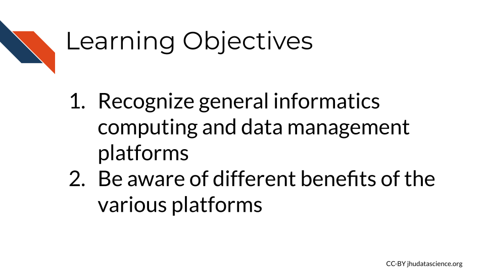
The major advantage of these platforms is that users can analyze data where it lives, as many platforms host public data. However, some also allow you to upload your own data. There is less need for data transfers back and forth to your personal computer, as you can analyze your data, store your data and share it in one place, saving time. Users can sometimes also share how they did their analysis as well, improving reproducibility practices. Additionally, another advantage is that some of these platforms also provide educational material on how to work with data.
Many offer a graphical user interface also simply called just graphical interface or GUI, allows for users to choose functions to perform by interacting with visual representations, which can be useful for individuals how are less comfortable writing code. They have a “user-centered” design that creates a visual environment where users can for example click on tabs, boxes, or icons for to perform functions. This also often allows users to more directly see plots and other types of visualizations.
Some platforms also offer a command line interface (also known as a character interface) which allows for software functions to be performed by specifying through commands written in text. This typically offers more control than a GUI, however command line interfaces are often less user friendly as they require that the user know the correct commands to use.
15.2.5.1 National Cancer Institute Cloud Resources
Funded by the National Cancer Institute (NCI), the cancer research data commons provides data access and computing infrastructure for researchers through three different platforms, the Cancer Genomics Cloud (CGC) which uses Google Cloud resources, the Institute for Systems Biology Cancer Gateway in the Cloud (ISB-CGC) which also uses Google Cloud resources, and FireCloud from the Broad Institute, which uses Amazon Cloud resources.
15.2.5.2 Cancer Genomics Cloud
The Cancer Genomics Cloud (CGC) is a computing platform that researchers can used to analyze, store, and share their own data, as well as work with large public and controlled cancer data sets, including genomic and imaging data. CGC offers tutorials and guides to help research get started, as well as $300 of free credits to use the platform and test it out. Users can also access many tools and workflows to help them perform there analyses. CGC also offers regular webinars.
The platform is based on a partnership with Seven Bridges, a biomedical analytics company, and can be accessed simply by using a web browser. Users can can use a point and click system also called a graphical user interface (GUI) or can access resources using the command line. See this link to learn more.
15.2.5.3 Institute for Systems Biology (ISB) Cancer Gateway in the Cloud
The ISB-CRC platform allows users to browse and data from the Genomic Data Commons and other sources, including sequencing and imaging data both public and controlled. They provide access pipeline tools, as well as to pipelines, workflows, and Notebooks written by others in R and Python to help users perform analyses. ISB also offers $300 in free credits to try out the platform. See here for a user guide.
15.2.5.4 Broad Institute FireCloud
FireCloud provides users with computing resources and access to workspaces using Broad’s tools and pipelines. Users can run large scale analyses and work with collaborators. FireCloud offers access to The Cancer Genome Atlas (TCGA) controlled-access data. Other platforms like Galaxy and Terra described next, share resources with FireCloud.
15.2.5.5 Galaxy
This section was written by Jeremy Goecks:
Galaxy is a web-based computational workbench that connects analysis tools, biomedical datasets, computing resources, a graphical user interface, and a programmatic API. Galaxy (https://galaxyproject.org/) enables accessible, reproducible, and collaborative biomedical data science by anyone regardless of their informatics expertise. There are more than 8,000 analysis tools and 200 visualizations integrated into Galaxy that can be used to process a wide variety of biomedical datasets. This includes tools for analyzing genomic, transcriptomic (RNA-seq), proteomic, metabolomic, microbiome, and imaging datasets, tool suites for single-cell omics and machine learning, and thousands of more tools. Galaxy’s graphical user interface can be used with only a web browser, and there is a programmatic API for performing scripted and automated analyses with Galaxy.
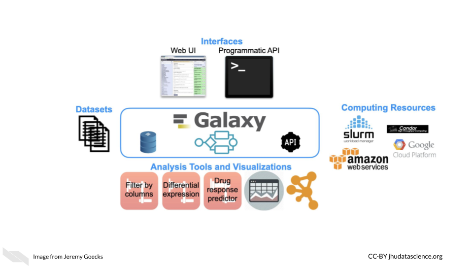
Galaxy is used daily by thousands of scientists across the world. A vibrant Galaxy community has deployed hundreds of Galaxy servers across the world, including more than 150 public and three large national/international servers in the United States, Europe, and Australia (https://usegalaxy.org, https://usegalaxy.eu, https://usegalaxy.org.au). The three national/international servers have more than 250,000 registered users who execute >500,000 analysis jobs each month. Galaxy has been cited more than 10,000 times with >20% from papers related to cancer. The Galaxy Tool Shed (https://usegalaxy.org/toolshed) provides a central location where developers can upload tools and visualizations and users can search and install tools and visualizations into any Galaxy server. Galaxy has a large presence in the cancer research community. Galaxy serves as an integration and/or analysis platform for 7 projects in the NCI ITCR program. There is also increasing use of Galaxy in key NIH initiatives such as the NCI Cancer Moonshot Human Tumor Atlas Network (HTAN) and the NHGRI Data Commons, called the AnVIL (https://anvilproject.org/).
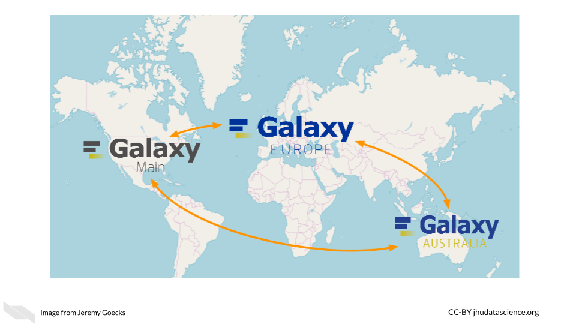
Galaxy’s user interface, accessible via a web browser, provides access to all Galaxy functionality. The main Galaxy interface has three panels: available tools (left), running analyses and viewing data (middle), and a full history of tools run and datasets generated (right).
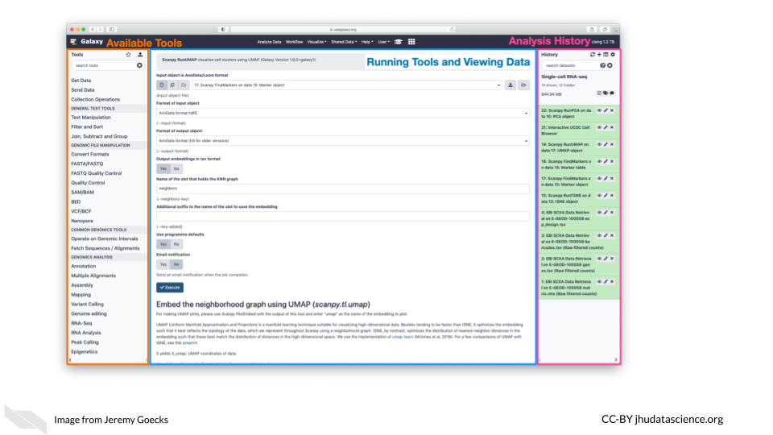
Datasets for analysis in Galaxy can be uploaded from a laptop or desktop computer or obtained from public data repositories connected to Galaxy. With Galaxy, complex workflows composed of tens or even hundreds of analysis tools can be created and run. In Galaxy’s workflow interface, tools can be added and connected via a simple drag-and-drop approach.
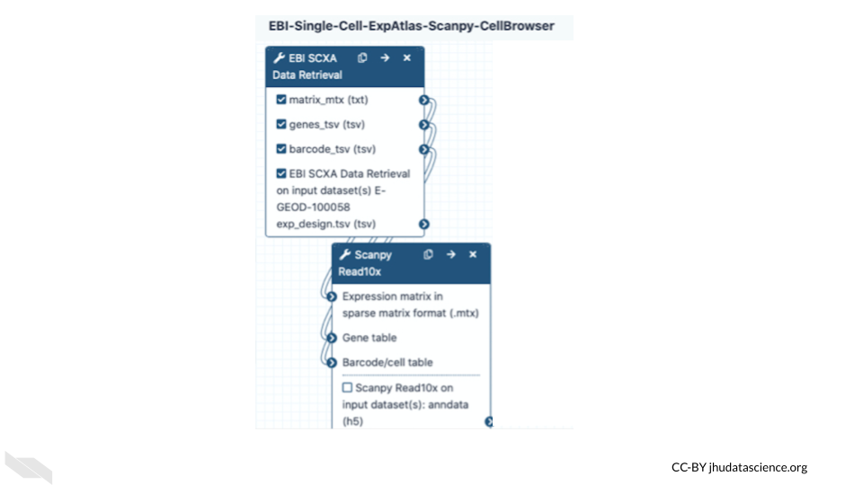
Galaxy users can share all their work—analysis histories, workflows, and visualizations—via simple URLs that are available to specific colleagues or a link that anyone can access. Galaxy’s user interface is highly scalable. Tens, hundreds, or even thousands of datasets can be grouped into collections and run in parallel using individual tools or multi-tool workflows. In summary, Galaxy is a popular computational workbench with tools and features for a wide variety of data analyses, and it has broad usage in cancer data analysis.
See here for the list of applications supported by Galaxy and here for more information on how to use Galaxy resources.
15.2.5.6 Terra
Terra is a biomedical research computing platform that is based on the Google Cloud platform, that also allows users easier ways to manage the billing of their projects. It provides users with access to data, workflows, interactive analyses using Jupyter Notebooks, RStudio, and Galaxy, data access and tools from FireCloud from the Broad Institute, as well as workspaces to organize projects and collaborate with others. Terra also has many measures to help ensure that data is secure and they offer clinical features for ensuring that health data is protected. Note that users who do upload protected health information must select to use extra clinical features and enter a formal agree with Terra/FireCloud about their data. See here for more information.
Importantly users can get access to use Genotype -Tissue Expression (GTEx), Therapeutically Applicable Research to Generate Effective Treatments (TARGET) and The Cancer Genome Atlas (TCGA) data using the platform. See here for information on how.
Users can pay for data storage and computing costs for Google Cloud through Terra. Users can browse data for free.
Check out this video for more information:
15.2.6 AnVIL
If you could use some guidance on how to perform analyses using Galaxy and Terra, especially for genomic research, check out AnVIL, the National Human Genome Research Institute (NHGRI) Analysis Visualization and Informatics Lab-space. It also provides access to many important genomic and related datasets from the NHGRI.
According to their website:
By providing a unified environment for data management and compute, AnVIL eliminates the need for data movement, allows for active threat detection and monitoring, and provides elastic, shared computing resources that can be acquired by researchers as needed.
It relies on Terra for the cloud based compute environment, Dockstore for standardized tools and workflows, Gen3 for data management for querying and organizing data, Galaxy tools and environment for analyses with less code requirements, and Bioconductor tools for R programming users. Bioconductor is a project with the mission to catalog, support, and disseminate bioinformatics open-source R packages. Packages have to go through a review process before being included.
15.2.7 CyVerse
CyVerse is a similar computing platform that also offers computing resources for storing, sharing, and working with data with a graphical interface, as well as an API. Computing was previously offered using the cloud computing platform from CyVerse called Atmosphere, which relied on users using virtual machines. Users will now use a new version of Atmosphere with partnership with Jetstream. This allows users to use containers for easier collaboration and also offers US users more computing power and storage. Originally called iPlant Collaborative, it was started by a funding from the National Science Foundation (NSF) to support life sciences research, particularly to support ecology, biodiversity, sustainability, and agriculture research. It is led by the University of Arizona, the Texas Advanced Computing Center, and Cold Spring Harbor Laboratory. It offers access to an environment for performing analyses with Jupyter (for Python mostly) and RStudio (for R mostly) and a variety of tools for Genomic data analysis. See here for a list of applications that are supported by CyVerse. Note that you can also install tools on both platforms. Both CyVerse and Galaxy offer lots of helpful documentation, to help users get started with informatics analyses.
See here to learn more.
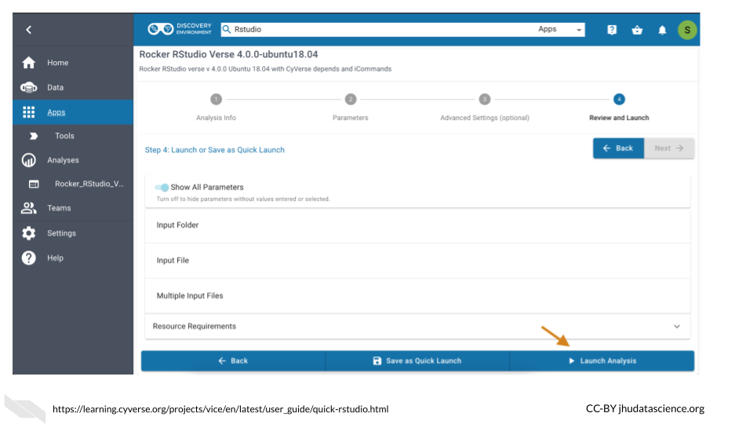
15.2.8 SciServer
SciServer is accessible through a web browser and allows users to store, upload, download, share, and work with data and common tools on the same platform. It was originally built for the astrophysics community (and called SkyServer) but it has now been adapted to be used by scientists of all fields and is indeed used by many in the genomics field. It allows users to use Python and R in environments like Jupyter notebooks and RStudio, and also supports (Structured Query Language) SQL for data querying and management and is built on the use of Docker.
The main idea of SciServer, is based on this premise: “bring the analysis to the data”. It is free to use after users register. However, users can buy extra resources. Users can keep data private or share their data.
As compared to Galaxy, this resources may be better for users with a bit more familiarity with informatics but who require more flexibility, particularly for working with collaborators such as physicists or material scientists as there are more tools supported across disciplines. In addition it also gives users access to very large data sets on Petabyte-scale (note that some of these require special permission to use) and supports developers to create their own web interfaces called SciUIs for particular use cases.
For (sciserver_2020?) for more information.
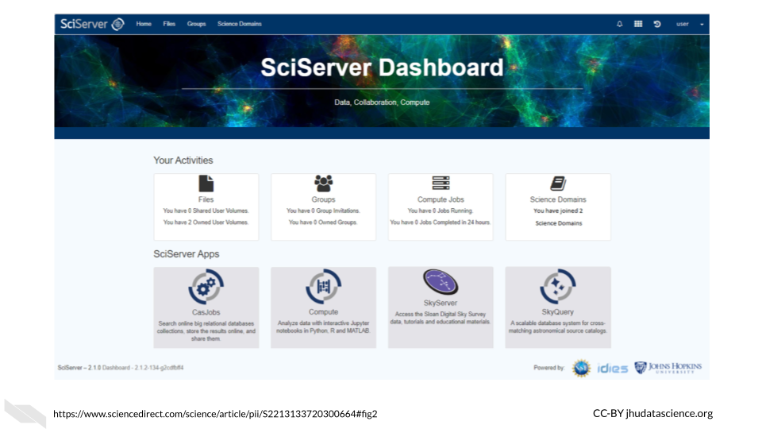
15.2.9 Materials Cloud
Another resource that might be of interest to Python users, particular those who collaborate with material scientists, is Materials Cloud. It is designed to promote reproducible work, collaboration, and sharing of resources among scientists, particularly for simulations for the materials science field. Users can share data in a citable way, download data, upload data, share workflows, and perform analyzes.
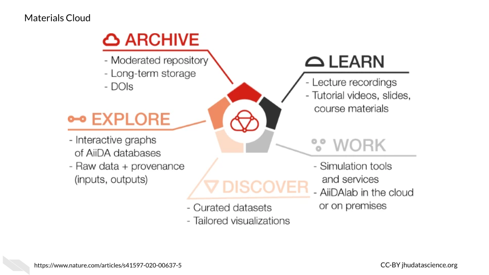
This resource uses AiiDAlab as the computing environment for researchers, which is based on AiiDA. According to their website:
AiiDAlab builds on AiiDA as the computational workflow engine, and the Jupyter environment (notebooks, widgets, …) for writing and sharing apps
See here to learn more about how AiiDAlab supports the sharing of scientific workflows, particularly for those that use Python.
To learn more about Materials Cloud, check out (talirz_materials_2020?).
15.2.10 Overture
Overture is a relatively new option for perform large-scale genomic data analyses. You can upload, download, manage, analyze and share your data with authentication and authorization methods to add security. Although designed for genomic research, the data management system can be used for other scientific domains. Currently, additional products are still being developed for analysis, visualization, and sharing. However, several collaborations have created new incredible resources using some of the existing and developing products that might be useful for your research. Alternatively, Overture has options to help you create your own platform, see here for more information. It is compatible with Google, Microsoft Azure, and PostgreSQL for storage options.
These collaborations using Overture products can be found on the case studies page of the Overture website.
For example, the Cancer Genome Collaboratory is one such collaboration. This is A cloud-based resource that allows researchers to perform analyses using International Cancer Genome Consortium (ICGC) cancer genome data, which includes tumor mutation data from the The Cancer Genome Atlas (TCGA) and the Pan-Cancer Analysis of Whole Genomes (PCAWG) mutation data. See here for information about billing, storage capacity, access, and security.
In addition, Overture products have also been used to create other data resources, such as the Kids First Data Resource Portal which has childhood cancer and birth defect genomic data for over 76,000 samples, and the National Cancer Institute’s Genomic Data Commons Data portal, which also includes The Cancer Genome Atlas (TCGA) and Therapeutically Applicable Research to Generate Effective Treatments (TARGET). The portal supports some basic analyses as well for clinical data statistics and survival analysis.
15.2.11 Globus
Globus provides developers of new platforms to manage, transfer, and share data with special attention to privacy and security.
It has been used for several platforms such as the Systems Biology Knowledgebase (KBase), which is focused on integrating data across plants and microbes, Biomedical Research Informatics Network (BIRN), which is a collaborative project to bring biomedical researchers together and share resources and data (helmer_enabling_2011?), and Globus Genomics,which uses the Globus data management infrastructure, Amazon web services, and Galaxy workflows to assist researchers with their genomics research endeavors. See this link for more examples of how others have used Globus.
15.2.12 BaseSpace Sequence Hub
BaseSpace is a platform that allows for data analysis of Illumina sequencing data and syncs easily with any Illumina sequencing machines that you might work with. There are many applications available to help you with your genomics research. They offer a 30 day free trial.
15.2.13 ATLAS.ti
ATLAS.ti is designed particularly for qualitative analysis. You can use a variety of data types including video, audio, images, surveys, and social media data. A variety of tools, particularly for text data analysis are provided for methods such as sentiment analysis, which is the process of assigning a general tone or feeling to text and named-entity recognition, which is the process of extracting certain characteristics from texts that are what is called a [named entity] or a real-world object - such as a person’s name or address. Such analyses can be helpful for understanding behaviors that might be associated with cancer risk. Although this type of analysis can be performed using R or Python among other coding languages, ATLAS.ti offers a nice graphical user interface to perform these types of analyses.Furthermore ATLAS.ti offers a great deal of flexibility about such analyses using different data types easily.
15.2.14 GenePattern
GenePattern is similar to Galaxy in that it provides a web-based interface for genomic analyses. You can upload your own data, use workflows and pipelines form others and more!
See here to access their user guide and here for a quick start guide to using GenePattern Notebook which uses Jupyter Notebooks and GenePattern analysis tools to easily create data analysis reports. Users can also publish and share their notebooks with collaborators or the field, as well as access other people’s notebooks that they can adapt for their own uses. See here for a collection of available notebooks.
15.2.15 XNAT
XNAT offers computing resources and tools for performing imaging analysis and for storing and sharing imaging data in a HIPAA complaint manner (more on that in the coming). Developed by the Bukner lab previously at the Washington University and now at Harvard, it supports a variety of imaging data as well as other data types like clinical data. Some tools can be used with a graphical interface and others with the command-line. See here for example use cases. There is also a great deal of documentation available about how to use the tools and resources available at https://wiki.xnat.org/documentation.
15.2.16 OHIF
The open health imaging foundation (OHIF) is a web-based imaging analysis platform that is widely used, particularly for radiology analysis, but it also supports whole-slide microscopy image analysis. It was developed by Gordon Harris et al. and can be used for a variety of applications from cardiology to veterinary medicine. Check out these example use cases of OHIF. OHIF also provides thorough documentation with images and videos about how to use the image viewer and tools available.
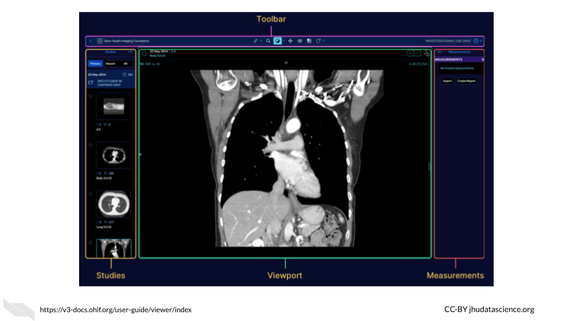
For those interested, Gordon Harris and others are also working on a project called Cornerstone, with the goal of providing software for others to display medical images in web browsers.
15.2.17 PRISM
The Platform for Imaging in Precision Medicine called PRISM works behind the scenes in the Cancer Imaging Archive (TCIA) to allow users to work with the vast data available in TCIA, in terms of both imaging data and clinical information.
According to Fred Prior:
It is designed to collect, curate and manage Radiology and Pathology images, clinical information associated with those images, annotations and image derived feature sets. PRISM is designed to run on a Kubernettes cluster, but all of the components are containerized so they can run stand-alone or in an alternate orchestration framework.
See this article for more information.